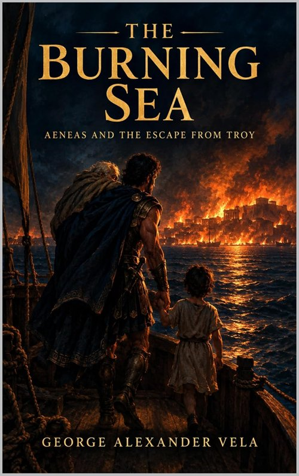

The One Trojan Homer Refused to Kill
Aeneas is in the Iliad, and he very nearly dies there. In Book Twenty he squares up to Achilles — a fight he has no business being in — and Poseidon, of all gods, a god who wants Troy burned, wades in and lifts him out of it. The reason Poseidon gives is the strangest line in the poem: it is fated that Aeneas and his sons will rule over the Trojans who survive. Homer is announcing, in the middle of a Greek victory epic, that the Trojans are going to have a future, and that this second-tier prince, cousin to Hector and son of a goddess, is the man who carries it. Then Homer drops the thread entirely. The Iliad ends with Hector's funeral, and nobody in it ever says what Aeneas's future actually was.
Seven centuries later a Roman poet picked the thread up. Virgil's Aeneid takes Homer's loose end and makes it the founding myth of Rome: the survivor of Troy sails west, and the city he is promised will one day be the empire reading the poem. It is the one Trojan story that does not end the night the horse opened. It begins there.
The Night of the Horse, From the Losing Side
Virgil's account of the fall — Book Two of the Aeneid, the book every schoolchild in the Roman world learned by heart — is the fullest description of the sack of Troy that survives from antiquity, and it is told entirely from inside the walls. It starts before the fighting. Hector's ghost comes to Aeneas in his sleep, mutilated exactly as Achilles left him, and presses Troy's household gods into his hands: the city is finished, take these, find them a new home across the sea. Aeneas wakes to the screaming. Sinon, the Greek "deserter" who talked the Trojans into dragging the horse inside, has slipped out in the dark and unbarred it.
What follows is the sequence the later tradition never improved on. Priam, too old to fight, straps on armour anyway and is cut down at his own family altar by Achilles' son, who first kills Priam's boy in front of him so the old man has to watch. Aeneas, on a rooftop, sees the king die and thinks of his own father. Then — in a passage that the ancient commentator Servius already suspected was not Virgil's own, and that scholars still argue about — he finds Helen hiding at the shrine of Vesta, draws his sword to kill the woman the whole war was for, and is physically stopped by his mother. Venus's argument is not mercy. It is that human hands are irrelevant tonight: she pulls the veil off the city and shows him the gods themselves tearing the walls down, Neptune at the foundations, Juno at the gate, Athena on the citadel. Go home. Get your family out.

The whole voyage, from the belly of the horse to the coast of Italy, is my new novel The Burning Sea. Get it on Kindle — free in Kindle Unlimited →A Father on His Back, a Son by the Hand
The image everyone knows — Aeneas carrying old Anchises on his shoulders, little Ascanius holding his hand, a wife following behind — is Virgil's, and it is the whole poem in one picture: the past on your back, the future in your grip. What is less remembered is that Anchises refuses to go. He is lame, he is old, he has lived through one sack of Troy already, and he would rather die in his house. Aeneas argues; it does not work. What works is an omen — a harmless flame that plays around the boy's head, and then a shooting star answering Anchises's prayer by streaking west over the mountain. The son's words open the door. The gods' sign is what walks the old man through it.
And then the wife is gone. Creusa falls behind somewhere in the burning streets, and Aeneas — who has just got his father and son to safety outside the walls — goes back into the city alone to look for her. He finds her ghost instead. She tells him, gently, that this was always going to happen: he has a long sea and a new kingdom and a royal bride ahead of him, and she is not part of it. She asks him to look after their son. He tries three times to hold her and three times his arms close on nothing. Homer gave Odysseus that exact gesture with his dead mother in the underworld; Virgil gives it to a husband at the gate of his own burning house, and it lands harder.
Seven Years of Wrong Shores
The middle of the story is a voyage, and it is a voyage of mistakes. The refugees build a fleet from what is left and try, repeatedly, to found their city in the wrong place — Thrace, Crete, a coast where the Harpies foul every meal and their leader spits a curse that they will not settle until hunger drives them to eat their own tables. They pass the coast of the Cyclopes and pick up a wretched Greek sailor whom Odysseus left behind in his hurry to get away from Polyphemus. Anchises dies in Sicily, quietly, of age, which is somehow worse than a heroic death. And then Juno, who has not forgiven Troy for anything, buys a storm from the wind-god and scatters the fleet across the sea.
The storm puts Aeneas on the beach at Carthage. Dido, its queen, is a refugee too — she fled Tyre after her brother murdered her husband, and she has built a city out of nothing, exactly what Aeneas has been failing to do for seven years. She has also sworn never to marry again. Venus and Juno, for opposite reasons, arrange for that vow to break. A hunt, a storm, a cave; a winter in which Aeneas stops sailing and starts helping her build her walls instead. Historically the meeting is impossible — Carthage was founded some four centuries after Troy fell — and Virgil knew it, and did not care, because he needed Rome's great enemy to have a personal grievance. When Mercury arrives with the reminder that Italy is still waiting, Aeneas leaves. Dido curses his descendants to eternal war with hers, climbs a pyre built from his belongings, and falls on the sword he left behind. The Aeneid never lets him off for it, and neither does anyone who has read Book Four.
The Underworld, and the City He Will Never See
Before Italy there is one more stop: down. With the Sibyl of Cumae as his guide and a golden bough as his passport, Aeneas descends to the dead — past Dido, who turns her back on him without a word, which is the most devastating silence in Latin literature — to find his father. Anchises shows him the future: a parade of souls waiting to be born, Romulus and the kings and Caesar and Augustus, the whole history of a city that does not exist yet. This is the moment Aeneas finally understands what he has been carrying. It was never a household shrine or a father or a son. It was a nation, and he is not going to live to see it. He goes back up, lands on the Italian coast, and the refugees, starving, eat the flat bread they have been using as plates. Somebody laughs: we are eating our tables. The curse was a promise. They are home.
What the Novel Does With Virgil
The Burning Sea retells Books One through Six — Troy, the voyage, Carthage, the underworld, the landfall — and stops there, before the Italian war, which is a different book with a different temperature. Every book in this series closes with an Author's Note, and this one is long, because Virgil is a poet people know. Two disclosures matter most. First, the poem tells the fall of Troy as a flashback — Aeneas's after-dinner story at Dido's table — and the novel does not: you live through the horse and the fire in order, as they happen, and by the time Aeneas tells Dido about it you already know what he is leaving out. Second, the Helen-at-the-shrine scene is kept, with a note that its authenticity has been disputed since antiquity; the book's standard is Dryden's complete 1697 text, not a modern critical excision of it, and the reader is told so rather than left to catch it.
The Note also owns its inventions by name — Hecuba's plea moved to the instant of Priam's death, where Virgil does not put it; a taunt line that is mine, not his; the narrator's modern comparisons, which belong to the narration and never to the characters. That is the standing rule for the whole series: when the source is followed, say so; when it is departed from, say where, and say why. Nothing is smoothed over. It is only disclosed.
The Burning Sea: Aeneas and the Escape from Troy
From the belly of the horse to the coast of Italy — Hector's ghost, Priam's altar, Creusa's shade, the Harpies, the storm, Dido's cave and Dido's pyre, the funeral games, the underworld — retold direct from Virgil, with an Author's Note naming every departure. Out now on Kindle, free in Kindle Unlimited.
Also on the blog: